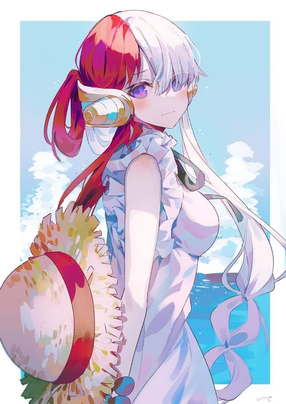

For the most part, Uta seems to be cheerful and optimistic. She possesses a strong ideal to build a new era of peace and happiness through her voice, even if it means people would be forced to live forever in the Uta World.
She is shown to be highly empathetic, as seen feeling righteous anger for a fan that wrote her a letter after losing loved ones. She holds great value to the opinion of her fans, doubting her plans temporarily after some of her fans opposed her actions, though she evidently holds her own ideals above them, as she turns her fans into objects to stop them from speaking their minds. She also hates pirates, due to how much they destroy the lives of her fans and due to her father and his crew abandoning her.
However, she is also highly ignorant of pirates in general, as seen in Uta Diary , where she discovered posters of Donquixote Doflamingo and Charlotte Linlin, and was completely unaware that they were a part of the Seven Warlords of the Sea and the Four Emperors respectively, instead commenting on their fashion and the photo itself. After her plans for New Genesis fail, she admits there are pirates who are worthy of respect, as she regains her admiration for her father's crew and confides in Luffy's dream to usher a new world by becoming the Pirate King. Due to her traumatic past, her isolation in Elegia, and the continuous consumption of wake-shrooms, which causes the consumer to slowly lose control of their emotion, Uta became mentally unstable at times when her plans and ideals was met with resistance, causing her to have episodes where she would act erratic, ruthless, and borderline cruel to those around her, regardless whether they were her enemies or fans, as she was quick to abandon and try to kill Luffy when he refused to go along with her plans. This also made her incapable of reason or negotiation by anyone, and she would ignore the pleas and warnings of others as she had planned to use Tot Musica as a last resort despite the warnings of destruction it would cause. Her reunion with Shanks would cause her to descend to complete madness to the point she would perform the ritual. As a child, Uta acted like a stereotypical diva, being infatuated with jewelry and glamour and not liking to get dirty. She could be overbearing and mean, particularly to other children like Luffy, and though she liked to throw out insults she would cry if her victim insulted her back. She looked down on some of the wilder, more boorish behaviors of her father and his crew, but was still proud of being a member of the Red Hair Pirates.
Uta's singing voice has been appraised as "otherwordly" (別次元, betsu jigen?), enough to grant her the title of the world's greatest diva.Aside from her singing talents, Uta is also great at music theory, showing amazing skill as a lyricist and composer by having written her most famous songs herself.
In terms of physical prowess, Uta has not displayed any superior abilities outside of being a talented and dexterous dancer, fully relying on her Devil Fruit ability to compensate. In fact, when Luffy fought her, he never actually directly attacked her body, knowing that he could potentially kill her if he did. She also does not have a lot of stamina, since usually she would fall asleep after only a few songs. In the movie, she counteracted this weakness by continuously consuming Wake-shrooms in order to last for hours.
Devil Fruit
Uta ate the Uta Uta no Mi, a Paramecia-type Devil Fruit that allows her to transport people's consciousnesses to a virtual space called "Uta World" by singing. Within Uta World, she is essentially all-powerful and able to do whatever she wants until she runs out of energy.
Tot Musica
Further information: Tot Musica
Tot Musica is a Demon Lord sealed under Elegia by a previous user of the Uta Uta no Mi. Uta can use her Devil Fruit ability to unseal it and have it fight for her.
Charisma
Arguably Uta's greatest weapon is her overwhelming charisma, which gained her worldwide popularity via her livestream performances. Robin had stated that she was the world's most beloved person, with Brook, a highly popular rockstar, claiming inferiority compared to her. Indeed, when she enacted her plan to pull people into Uta World, she managed to ensnare approximately 70% of the entire world's population. Also, while in Uta World, she commanded her entire audience in a pirate hunt, with the majority going along with her.
Weapons
She is seen wielding a spear and a shield and also used a jetpack that enables her to fly, though this was all in the Uta World. In the real world she had a knife, though never had the opportunity to use it.